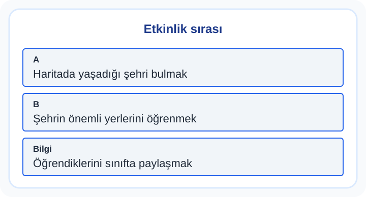

1. Sınıf Hayat Bilgisi Yaşadığım Yer ve Ülkem Orta Test 1
Yaşadığımız çevreyi tanımak; ortak değerleri, önemli yerleri ve günlük yaşamı bir arada düşünmeyi gerektirir. Yer ve olay bilgilerini karıştırmadan sorudaki ipuçlarıyla ilişkilendir.
10 soru · Yaklaşık 15 dakika. Bu bir süre sınırı değildir; açıklamaları kendi hızında inceleyebilirsin.
Yaşadığım Yer ve Ülkem: konu anlatımı ve çözümlü çalışma
Başlamadan önce dikkat et
Binaları yalnız büyüklüklerine göre sınıflandırmak işlevlerini açıklamaz.
Bu testten iki çözümlü örnek
1. örneği incele
Arda bir sorunla karşılaşınca önce durumu değerlendirdi, sonra bildiği yönü nazikçe tarif etmek yolunu seçti. Bu davranıştan hangisi çıkarılabilir?
- Arda ülkesinin değerlerine saygı duyar
- Arda kuralları önemsemez
- Arda sorunu büyütmek ister
- Arda çevresini dinlemez
Cevap ve gerekçe
Arda ülkesinin değerlerine saygı duyar
Sorunu düşünüp uygun çözümü seçmesi, arda ülkesinin değerlerine saygı duyar sonucunu destekler.
2. örneği incele
Görselde Yaşadığım Yer ve Ülkem etkinliğinin adımları verilmiştir. İkinci yapılması gereken hangisidir?

- Şehrin önemli yerlerini öğrenmek
- Haritada yaşadığı şehri bulmak
- Öğrendiklerini sınıfta paylaşmak
- tarihî bir yapının duvarını çizmek
Cevap ve gerekçe
Şehrin önemli yerlerini öğrenmek
İlk adımdan sonra “Şehrin önemli yerlerini öğrenmek” yapılır.
Testten sonra kısa çalışma
Yakın çevrendeki iki ortak alanı seç, hangi ihtiyaca hizmet ettiklerini anlat.
Yanlışlarını Öğren bölümünde kendi cevabını açıklamayla karşılaştır. Bir sonraki denemede cevabı ezberlemek yerine nedenini anlat. Veliler için sonuçları yorumlama
Soruların hazırlanması ve kontrol sınırları · İçerik hatası bildir
Öğrenme alanı: Yaşadığım Yer ve Ülkem. Buradaki beceriler çalışma odağını anlatır; resmî MEB öğrenme çıktısı kodları değildir. testcoz.pro, Millî Eğitim Bakanlığı’nın resmî sitesi değildir.
Testleri kayıt olmadan çözebilirsiniz. İsteğe bağlı kayıt, günlük hedef ve öğrenci paneli gibi ek özellikler için sunulur.